바다는 무엇을 따라야 하는가 — 연재 6회
문화 ․ 생활
바다는 무엇을 따라야 하는가?Ⅵ
Maritime space follows something?Ⅵ
이현성 (주)에스이공간환경디자인그룹 SEDG 공동대표 (사)한국공공디자인학회 상임이사 (armula@gmail.com)
아마도 모든 것들의 발전과정을 보면 번성과 쇠퇴의 양면을 오가는 과정을 가지지 않나 싶습니다. UN산하의 the United Nations Population Division의 보고서에 의하면 2007년은 전 세계 도시의 인구가 농촌의 인구를 앞지른 해인데 도시디자인의 중요성과 함께 도시환경의 질적 개선에 대한 관심이 뜨겁게 달아오르기 시작한 해이기도 합니다. 이러한 트렌드를 반영하듯 제 10회 베니스 건축디자인비엔날레의 주제는 ‘Cities: People, Society, Architecture’라는 다소 사회적이고 질적측면에 대한 주제였고 런던에서는 ‘ the Global Cities’라는 주제로 도시디자인에 대한 고민을 다시 하기 시작했습니다. 그 시기 즈음 한국에서는 공공디자인이라는 주제가 국회의 연구 포럼을 중심으로 시작되었고 우리의 도시 환경에 대한 새로운 문제제기와 의제를 던지기 시작하였습니다. 자세히 살펴보면 이러한 움직임들에 대한 공통점들을 찾을 수 있는데 그 것은 새로운 개발에 대한 내용이 아닌 기존의 문제점을 찾아 개선하는 방법적인 것에 대한 논의들이었다는 것입니다. 이러한 고민 속에 이에 '도시재생'이 전 세계적으로 중요한 화두로 떠올랐습니다. 다시 말해, 개발중심의 논리로 발전한 도시가 생기는 동시에 경제, 문화의 역량이 쇠퇴되어가는 문제점을 ‘재생디자인’이라는 주제로 해결하고자 하는 노력이 생겼습니다.
특히 유럽의 도시들이 개발의 과정을 마치고 쇠퇴기에 접어들자 도시재생(Urban Regeneration)이라는 주제로 대안을 마련하기 시작했습니다. 재생(再生)이라는 말은 뜻 그대로 생명을 다시 불어넣는다는 뜻입니다. 영어로도 생명, 세대를 뜻하는 Generation에 Re가 붙어있는 형상입니다. 중요한 것은 기존의 물리적인 개발과는 다른 무형적 방법을 적용하는 것입니다. 하드웨어 중심적인 사업에서 참여와 프로그램중심의 소프트웨어 사업을 통해 쇠퇴화된 도시의 기능을 다시 살리고 활성화 시키는 것이 목적이었습니다. 영국 런던의 테이트모던(Tate Modern)미술관의 재생은 그 상징적인 프로젝트가 되었습니다.
지금은 유럽에서 가장 성공한 미술관이기도 하면서 런던의 제1관광지이기도 합니다. 미술관 한군데만 연 500만명이 넘게 방문한다고 하니 이는 제주도 전체를 방문하는 관광객 수의 절반에 가까운 수입니다. 하지만 이 곳은 1990대만 해도 관광지로 돌아다니기엔 무척 위험한 곳이었습니다. 테이트 모던의 모태가 된 곳은 서울로 치면 여의도와 영등포 정도와 비슷한 런던의 서더크(southwark) 지역이라는 곳에 위치한 화력발전소인데 1980년대 발전기능을 거의 상실한 버려진 화력발전소였습니다. 영국 정부는 ‘런던 밀레니엄 도시재생 프로젝트’라는 도시 재생 디자인 계획을 통해 화력발전소를 재생시키고자 하였습니다. 그 계획은 단지 쇠퇴한 화력발전소를 재 개발하자는 의도는 아니었고 템즈강 건너편에 있던 문화유적지이자 관광지인 세인트 폴 대성당과 연계함과 동시에 쇠퇴한 남쪽 지역 도시의 균형발전을 위한 도시적 관점에서 접근하였으며 문화시설을 도입하여 지역의 촉매역할을 통해 주변부를 점차 개선해 나가는 재생디자인 방식을 선택하였습니다. 따라서 테이트모던은 신축이 아닌 예전 화력발전소를 그대로 활용하되 내부 프로그램과 기능만 변화시키는 재생디자인 방식이 적용되었으며 이에 따라 2차 세계대전 당시 모습을 유지함과 동시에 99m의 거대한 굴뚝 등 원형을 그대로 보존하였으며, 내부 또한 터빈실, 철제빔과 천장크레인도 그대로 유지하였습니다. 소위 ‘테이트효과’라고 불리는 이러한 발전소를 미술관으로 변화시킨 재생디자인기법은 그 이후 전 세계적으로 많은 모방 프로젝트를 만들어 내며 도시를 활성화 시키는 방식으로 자리 잡게 되었습니다.
우리나라도 2013년 도시재생 활성화 및 지원에 관한 특별법까지 생기면서 재생디자인에 대한 여러 가지 정책과 제도, 프로젝트들이 진행 중에 있습니다. 국토부 도시재생사업단의 정의에 따른 우리나라의 도시재생 정의는 공식적으로 “산업구조의 변화 및 신도시･신시가지 위주의 도시확장으로 상대적으로 쇠퇴되고 있는 기존 도시를 새로운 기능을 도입･창출함으로써 경제적･사회적･물리적으로 부흥시키는 것”으로 정의되어 있습니다. 즉, 도시재생의 개념 속에는 노후화된 시설의 물리적 환경의 개선과 함께, 일자리 창출과 지역상권의 부활을 통한 경제회생, 그리고 지역 커뮤니티의 복원과 주민참여 활성화를 통한 도시 활력의 증진과 같은 종합적인 성격이 포함되는 것입니다. 이러한 목적을 위해 도시재생 활성화 및 지원에 관한 특별법에 근거한 ‘도시재생사업’이 현재 진행 중에 있습니다. 특히 우리나라에서 큰 관심을 끌었던 도시재생 특징 유형의 하나가 일본식 커뮤니티 중심의 마을만들기 유형으로 도시재생사업단을 중심으로 커뮤니티 중심의 마을만들기를 추진하였는데 이러한 육역에 관련된 사업외에도 어촌특화 역량강화사업, 농촌자원복합산업화 지원 사업, 창조적 마을 만들기 등 우리 해양공간에 연계할 수 있는 재생디자인 제도들도 이미 많이 존재한다고 봅니다. 결국 제도의 문제가 아닌 현재 직접 관리나 행정을 진행하는 이해관계자들이 재생디자인에 관심을 갖고 기존과는 다른 방식으로 해양공간의 문제점 해결에 대한 방안을 찾으려는 창의적 노력이 부가되어야 할 것 같습니다. 육역 공간에서의 많은 재생디자인 개념들이 부흥의 시대를 맞고 실행되고 있음을 보고 우리 해양공간에 대한 쇠퇴요소에 대한 여러 재생디자인 전략의 적용을 진행해야 합니다.
이번 연재에서 살펴 볼 몇 가지 사례들은 그러한 재생디자인 관점에서 진행해 볼 만한 것들이라고 생각됩니다. 모든 것을 새롭게 만드는 ‘개발’방식이 아닌 기존의 것들에 새로운 기능을 부여해 활성화 시키는 ‘재생’방식에 대한 관심을 가질 때입니다.
1.캐나다 플로팅 다이닝 룸 (Floating Dining Room)
캐나다 플로팅 다이닝룸은 Goodweather Design & Loki Ocean이 설계한 캐나다 벤쿠버 위치한 24평방미터 면적에 해당하는 레스토랑입니다. 레스토랑이라고는 하나 기존개념의 레스토랑이 아닌 수면에 떠있는 독특한 곳입니다.
<그림 1> 캐나다 플로팅 다이닝룸 전경 < IMAGE :www.archdaily.com >
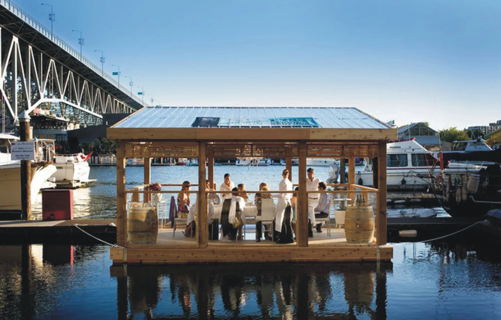
이곳의 특징은 공간구조외에도 여러 가지 가지고 있는데 우선 이 레스토랑은 수산업 재단의 지속적인 해산물 홍보 및 비영리 학교의 기금 모금을 위해 설계된 사회적 가치를 지니고 있는 곳입니다.
<그림 2> 부력을 위한 재활용 플라스틱 < IMAGE :www.archdaily.com >
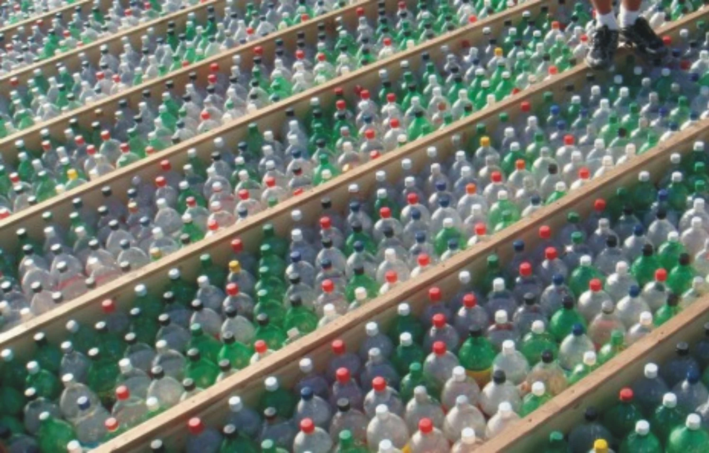
<그림 3> 캐나다 플로팅 다이닝룸 시공 모습 < IMAGE :www.archdaily.com >
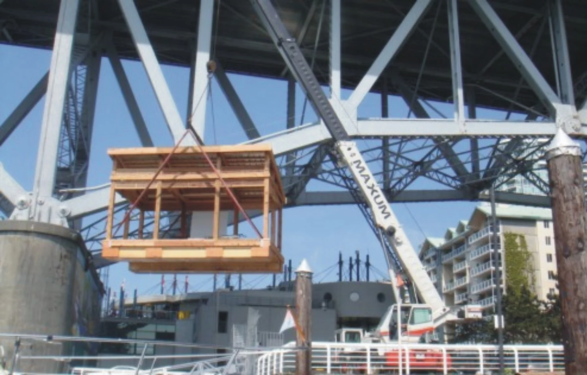
또한 소재에 있어서도 지속가능한 친환경 개념을 도입하여 1,700개의 재활용된 플라스틱을 연결하여 프레임을 설치하였으며 이를 통해 해양 쓰레기에 대한 관심을 모으고자 하였으며 레스토랑의 기본 구조인 목재 또한 지역의 삼나무를 사용하여 재생디자인 관점에서 제작하고자 하였습니다.
<그림 4> 캐나다 플로팅 다이닝룸 내부 모습 < IMAGE :www.archdaily.com >
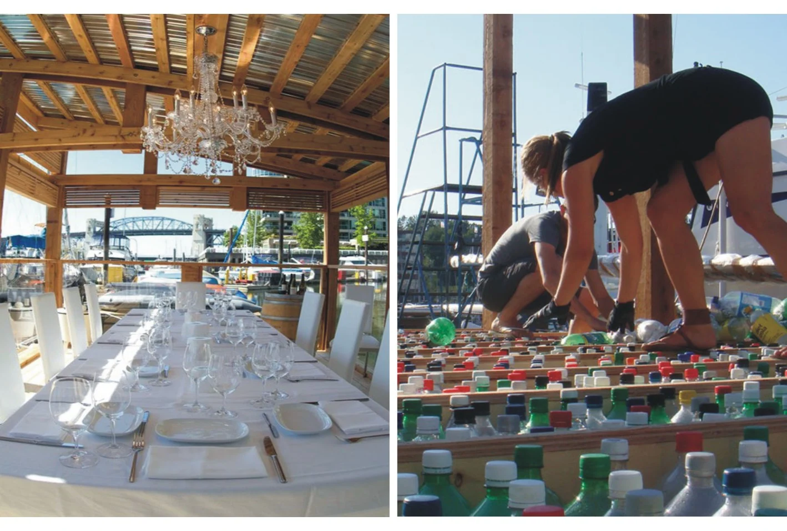
이곳은 사회적 기금도 마련이 되고 수변에 떠있다는 특징 그리고 재생디자인으로 적용된 특징 때문에 예약을 하고 오래 기다려야만 될 정도록 지역 명소가 되었으며 재생디자인을 통해 해양수변공간의 명소를 만드는 사례가 되었다.
2.일본 키타큐슈 모지코 레트로 사업(Mojiko Retro Town)
일본 기타큐슈의 모지코는 1890~1940년 일본을 대표하는 무역항으로서 철도의 거점이 되었으며 대금융자본과 상사가 진출할 정도로 번성한 타운이었습니다. 그러나 1942년~1975년에 걸쳐 칸몬 국도 터널이나 칸몬교가 개통되고 전쟁 후 대륙무역이 감소하자 교통거점으로서의 입지 상실되며 도심이 쇠퇴하기 시작하였습니다. 특히 해체 위기에 직면한 지역의 역사적 건조물에 대한 위기감에 지역 특성을 살리는 재생디자인 사업을 국가에서 지원하여 시작하였습니다.
<그림 5> 모지코 레트로 나이트 환타지 < IMAGE :www.japanvisitor.com >
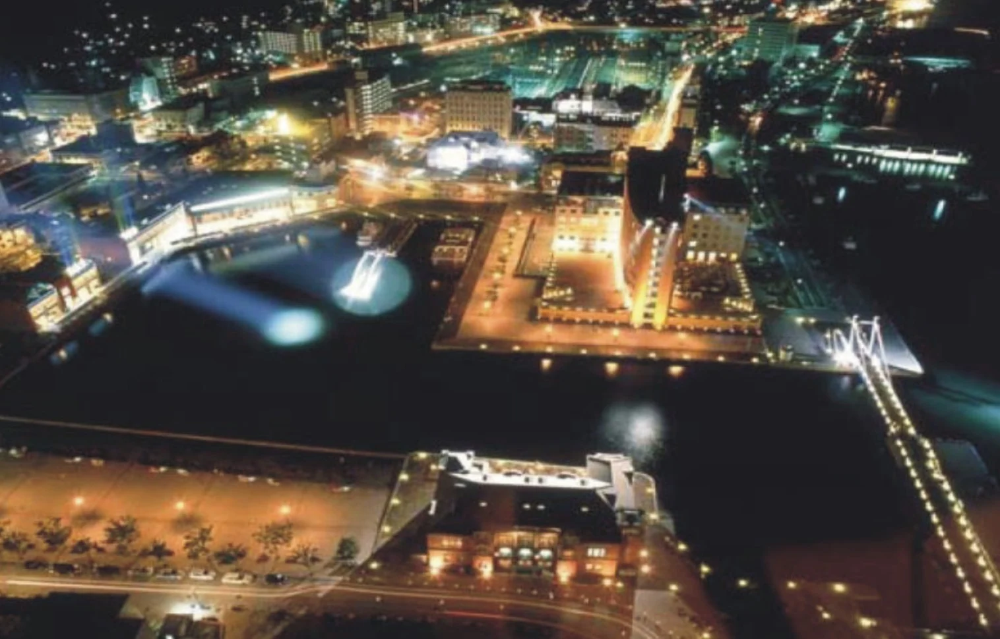
<그림 6> Chinese Eastern Railway Office < IMAGE :www.japanvisitor.com >
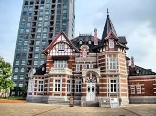
<그림 7> 선박계류장 하네바시 < IMAGE :공공디자인 선진사례자료 ,한국디자인진흥원 >
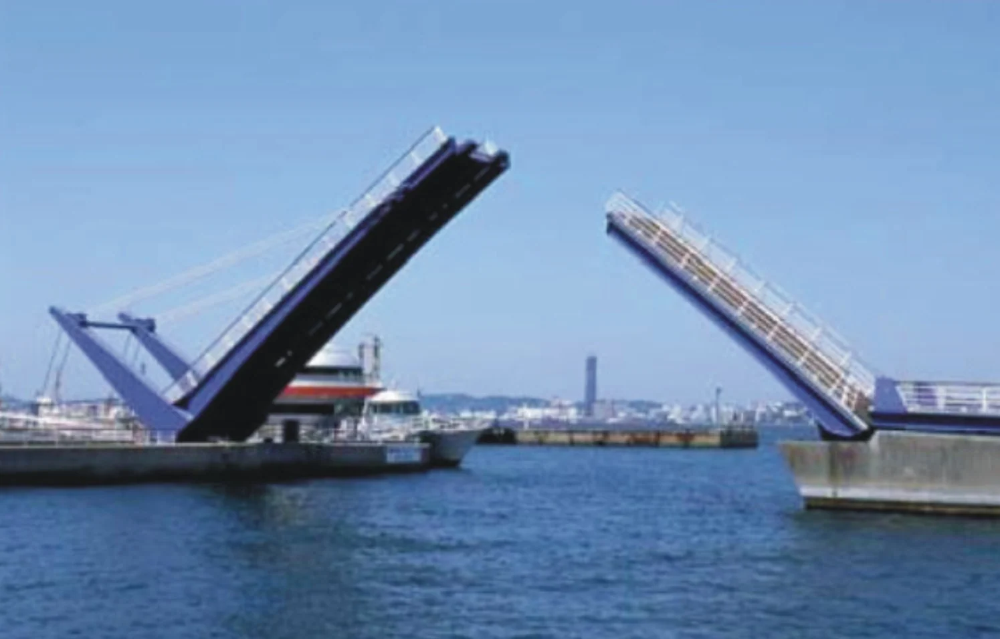
전체적인 재생디자인 전략은 크게 2단계를 통해 진행되었는데 1988년~1994년 시행된 총 사업비 약 300억엔(공공투자) 모지코 레트로 제1기 사업은 주로 역사적 건조물 보존활용 재생사업, 유람로와 전망대 정비, 제일선박계류장 하네바시 건설등에 집중되었습니다. 이를 통해 관광객이 1994년 25만명에서 107만명으로 비약적으로 증가하였으나 이에 따르는 문제점으로 짧은 체류시간의 내용들과 음식과 물품판매시설의 부족과 주차장, 화장실등 기반 시설의 부족이 문제점으로 나타나게 되었습니다. 바로 이어진 모지코 레트로
<그림 7> 모지코 레트로 전망실과 모지코 호텔 < IMAGE :공공디자인 선진사례자료 ,한국디자인진흥원 >
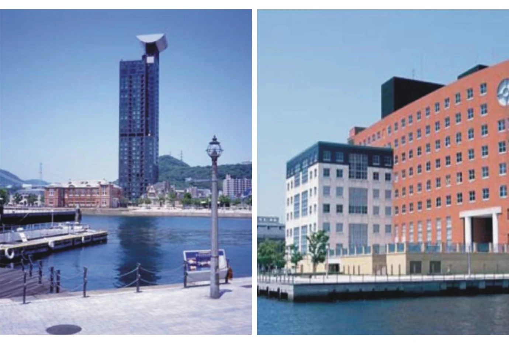
제2기 사업은 1997년부터 시작되었는데 총 사업비 약 300억엔(공공 약 150억엔, 민간 약 150억엔)이 투입되었으며 유람성 향상 및 체류시간 장시간화, 야간경관 정비, 상가 활성화 등의 재생디자인에 투자되었습니다. 결과적으로 관광객이 1995년 107만명에서 2004년 230만명으로 증가되었고 민간을 통한 투자와 프로그램 운영들이 증가되었습니다. 1995년 '모지코 개발주식회사'가 설립되고 같은해 주민들에 의한 마을만들기 단체인 '모지코 레트로 클럽'이 설립되었습니다.
<그림 7> 모지코 레트로 축제 < IMAGE :공공디자인 선진사례자료 ,한국디자인진흥원 >
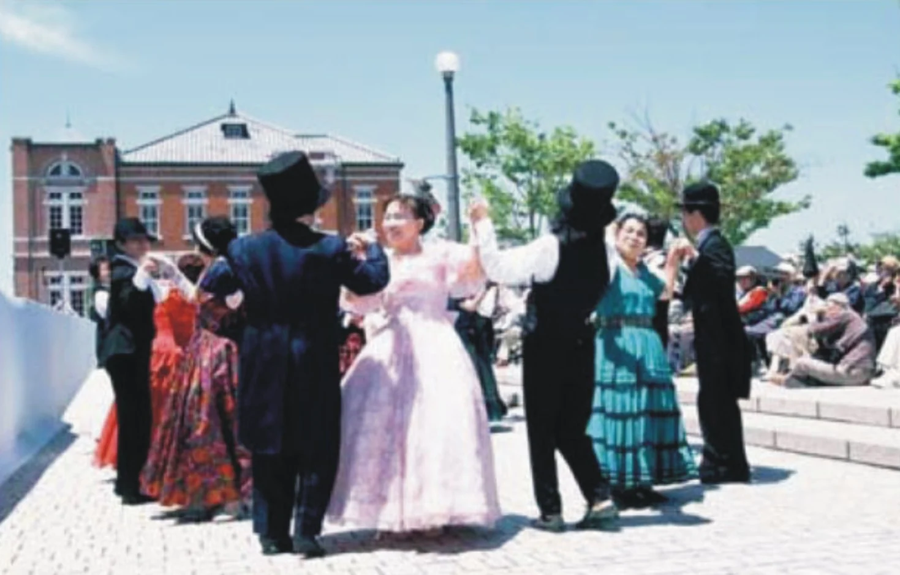
또한 칸몬지역 관광지역진흥을 위한 관광추진협의회가 1997년 설치되어 관광자원홍보와 공동 이벤트 개최등을 진행하여 지역 재생에 기여하였습니다.
3.독일 뒤셀도르프 메디언하펜(MedienHafen)
○뒤셀도르프는 라인강(Rhein River) 중하류에 위치한 독일 내륙 항구도시임
○1950년대 라인강의 기적으로 일컫는 독일 경제 부흥과 함께 1960년대까지 경제도시로 급성장
○1970년대 석탄 및 철강산업 쇠퇴화되면서 인구감소, 실업률 증가, 산업시설 이전 등 쇠퇴화
○2000년대 뒤셀도르프시 주도로 방송, 정보통신, 예술 중심의 창조도시 목표로 하는 메디언하펜으로 재생
(2) 디자인 기술의 방향 및 목표
○창조도시 구현과 지역경제 회복을 위한 장기적, 단계적 토지개발
○1970년대 말 1단계 ; 라인탑(1982년 완공), 주의회 의사당(1988년 완공), 서부 독일방송 스튜디오(1991년 완공) 건설
○1980년대 2단계 ; 방송시설 및 소규모 사무실, 문화시설, 화실, 수공예 작업실 등 유치
○1990년대 3, 4단계 ; 추진 중
○방송, 광고, 유행, 예술, 유럽연구소, 주 영화진흥소, 건축사 조합 등 창조적 영역에 대한 성공적 유치
○역사적 반영 및 특색있는 건축물.시설물 설치에 따른 창조적 수변경관 연출
○수변과 도시공간 단절시키는 1973년 건설된 2km 제방도로에 대하여 지하화하고 상부공간 공원화
○녹지축 따라 보행자 전용도로 설치(라인우퍼프롬나드 Rheinuferpromenade), 이에 인접한 건축물 스카이라인을 2-3층으로 규제, 개방성 확보
<그림 8> 뒤셀도르프 전경 < IMAGE :www.medienhafen.de>
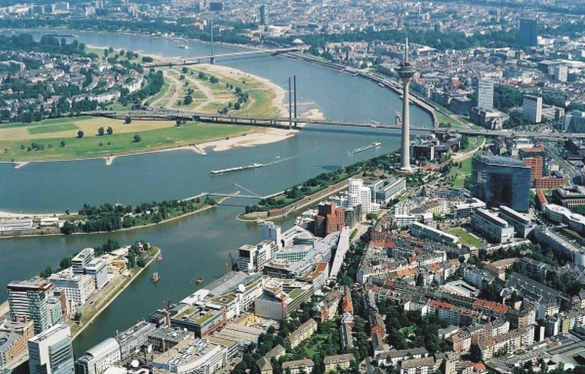
<그림 8> 메디언하펜 모습 < IMAGE :>
<그림 9> 메디언하펜 내 Living Bridge < IMAGE :>
<그림 10> 벤라스(Benrath)성과 공원 < IMAGE :>
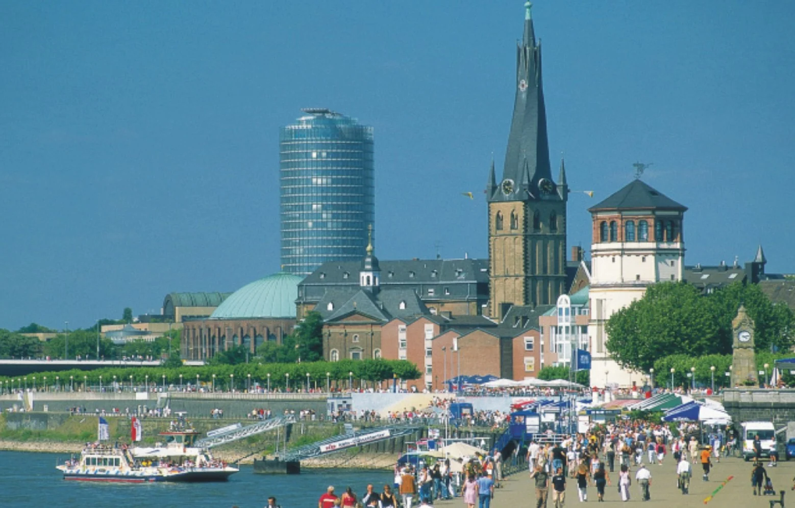
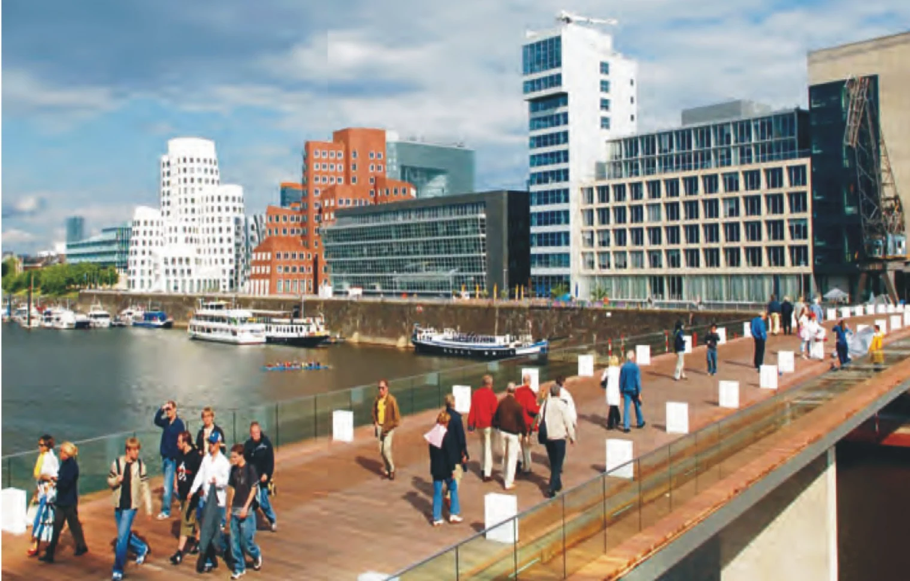
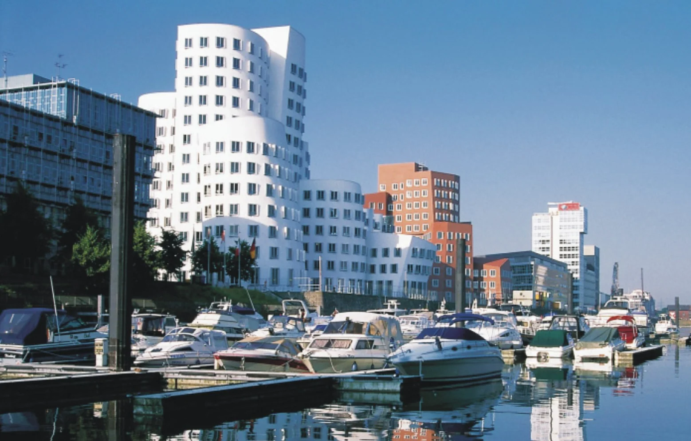
<그림 11> 메디언하펜 야경 < IMAGE :>
<그림 12> 수변에 늘어서 있는 건물들 < IMAGE :>
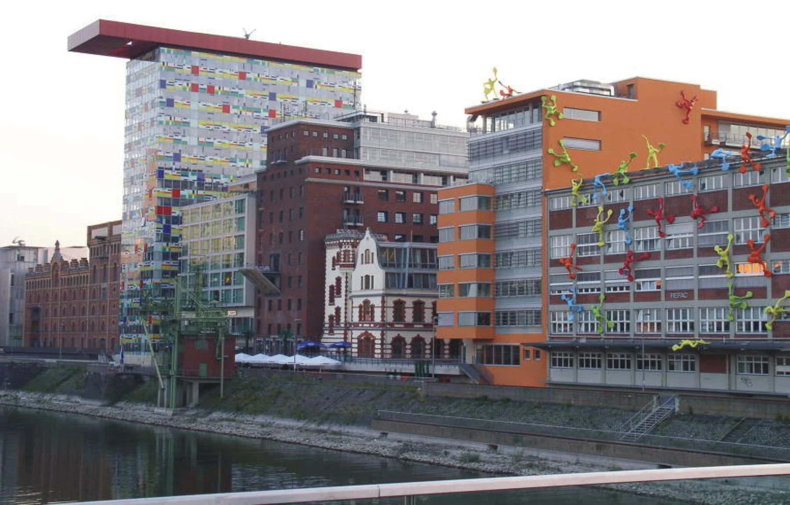
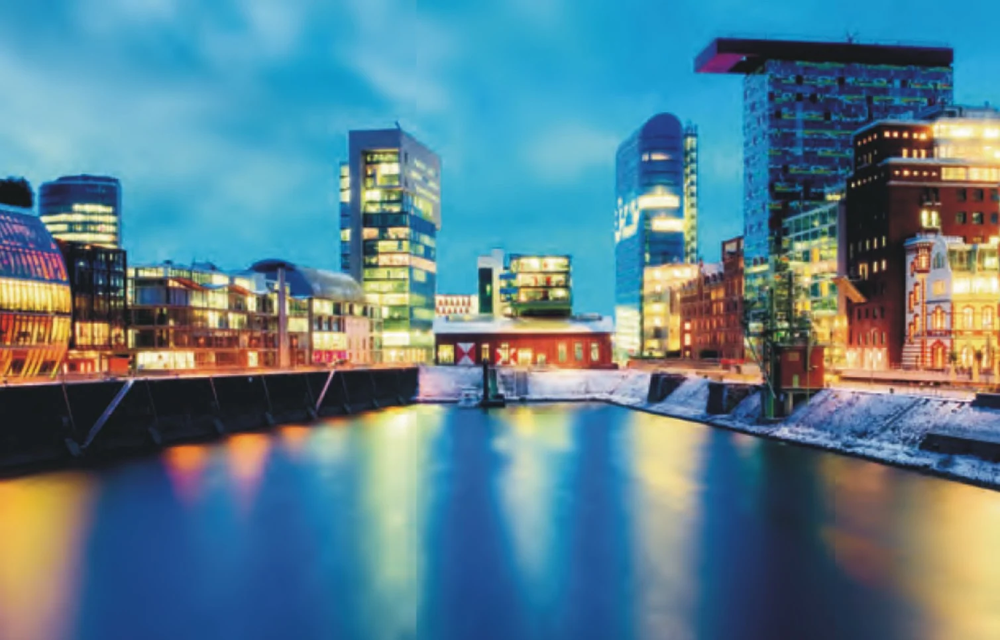
[참고문헌]
국토해양부외, ｢해양 공간의 가치 창출을 위한 해양디자인기술 개발 기획연구｣, 2012
이현성외, ｢해양공간디자인｣, 미세움, 2013.
㈜휴앤즈, 「공공디자인 선진사례 연구답사 제5차 자료」, 한국디자인진흥원, 2008.
진양교, 「Journey to the Memory and Symbol : 43 도시재생공원」, 조경, 2010.
일본 농업 6차 산업화 정책 현황과 과제, 세계농업 제162호
6차 산업화 관련 정책사업 추진실태 진단 및 정책 간 연계방안 연구 (사)한국농업경제학회 2014
권영상·조민선, 「수변공간 활성화를 위한 도시계획 및 설계방향」, 건축도시공간연구소, 2010.
2016년 봄호
1
항 만
2
기록기반 추가 복구 텍스트 — 위치 대조 필요
Section0/paragraph-0012/record-7049
바다는 무엇을 따라야 하는가? II
Section0/paragraph-0060/record-33586
<그림 8> 메디언하펜 모습 < IMAGE :www.medienhafen.de>
Section0/paragraph-0062/record-34387
<그림 9> 메디언하펜 내 Living Bridge < IMAGE :www.medienhafen.de>
Section0/paragraph-0064/record-35178
<그림 10> 벤라스(Benrath)성과 공원 < IMAGE :www.medienhafen.de>
Section0/paragraph-0066/record-37131
<그림 11> 메디언하펜 야경 < IMAGE :www.medienhafen.de>
Section0/paragraph-0068/record-37898
<그림 12> 수변에 늘어서 있는 건물들 < IMAGE :www.medienhafen.de>
이 글의 판본과 수록 정보 ＋
이현성 명의가 확인된 판본 있음; 최종 집필 범위 확인 필요
연재 회차별로 분리. 같은 회차의 감수·수정본만 연결.
- 수록 자료
- 20170308 집필6 (이현성).hwp
- 자료의 날짜 단서
- 2017-03-08 · 실제 발표일과 다를 수 있습니다.
- 관련 파일
- 1개 / 서로 다른 본문 1종